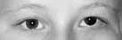

Ptosis

- Droopy upper lid caused by nerve, neuromuscular junction, or muscle lesions
- Common causes: third cranial nerve palsy, Horner syndrome, myasthenia gravis, levator aponeurosis dehiscence, orbital trauma, chronic contact lens wear, congenital levator dysplasia
- Uncommon causes: orbital lesion, chronic topical corticosteroid use, Guillain-Barré syndrome, chronic inflammatory demyelinating polyradiculoneuropathy, botulism, mitochondrial myopathy, oculopharyngeal or myotonic dystrophy, congenital myopathy
-
Core clinical features
- Patient reports “hooded vision,” “sleepy eyes,” or may be unaware of abnormality
- Lower border of upper lid crosses eye below expected level
-
Possible accompanying clinical features
- Upper lid has reduced upward excursion
- Upper lid crease is absent or too low, as in congenital ptosis, aponeurosis dehiscence
- Upper lid does not fully descend when eye moves into full downward gaze or during sleep (“lagophthalmos”), as in congenital ptosis, upper lid scarring
- Patient contracts brow muscles to lift ptotic upper lid
- Ptosis improves after restful eye closure or ice pack on upper lid, as in myasthenia gravis
- Ptosis develops in contralateral eye when you lift ptotic lid, especially in myasthenia gravis, but in any cause of ptosis Ptosis in Myasthenia Gravis
- Upper lid is thickened or deformed, as in lid tumor, inflammation, or scarring
- Involuntary contraction of orbicularis muscle in blepharospasm
- Dermatochalasis
- Blepharophimosis
- Upward deviation of eye in hypertropia
- Upward displacement of eye (“ocular dystopia”)
- Brow droop
- Orbicularis oculi contracture in reinnervated facial palsy (“post-paretic facial contracture”)
- Enophthalmos
- Lid retraction on opposite side
- Sleepiness


- Exclude imitators of true ptosis (“pseudoptosis”)
-
Look for these accompanying features of true ptosis
- Diplopia, ductional deficits, mydriasis, as in third nerve palsy
- Fatigable ptosis, orbicularis weakness, bulbar and extremity weakness, as in myasthenia gravis
- Symmetrically reduced and slow ocular ductions, as in chronic progressive external ophthalmoplegia
- Ipsilateral miosis, as in Horner syndrome
- History of orbital trauma, inflammation, rigid contact lens wear
- Downwardly displaced or absent upper lid crease, as in levator muscle trauma, levator aponeurosis weakness, congenital ptosis
- Cause of ptosis is often evident from clinical features
-
Trap: do not diagnose Horner syndrome without pharmacologic confirmation by reversal of anisocoria with topical instillation of apraclonidine 0.5% (or failure of pupil dilation following topical instillation of cocaine 10% in children aged 2 years or younger)
-
Tip: chronic topical apraclonidine instillation may be useful for relief from ptosis of Horner syndrome if patient wishes to avoid surgery
- Do not diagnose age-related stretching of levator tendon (“aponeurotic ptosis”) except by exclusion of other causes
-
Trap: Cogan lid twitch sign is not specific for myasthenic ptosis
- Ptosis surgery is usually successful, but should not be undertaken until causes of reversible ptosis have been excluded